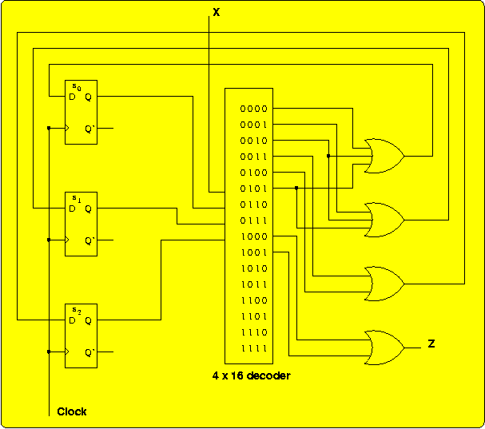

Exercise A-34
The Question
Given the state transition diagram shown, (a) Create a state table. (b)
Design a circuit for the state machine using D flip-flops, a single
decode, and OR gates. For the state assignment, use the bit pattern
that corresponds to the position of each letter in the alphabet,
starting from 0. for example, A is at position 0, so the state
assignment is 000; B is at position 1, so the state assignment is 001,
and so on.
The Authors' Solution
The state assignments, as specified:
State
Name
| Encoding
|
| S2
| S1
| S0
|
| A | 0 | 0 | 0 |
| B | 0 | 0 | 1 |
| C
| 0 | 1 | 0 |
| D | 0 | 1 | 1 |
| E | 1 | 0
| 0
|
Let si represent the Q output of state flip-flop
si, and let Di represent the D
input to state flip-flop si.Then the state table looks
like this:
| Present State
| Next State / Output
|
| X = 0
| X = 1
|
| s2 s1 s0
| D2 D1 D0 / Z
| D2 D1 D0 / Z
|
| 0 0 0
| 0 0 1 / 0
| 0 1 0 / 0
|
| 0 0 1
| 0 1 1 / 0
| 1 0 0 / 0
|
| 0 1 0
| 1 0 0 / 0
| 0 1 1 / 0
|
| 0 1 1
| 0 0 0 / 0
| 0 0 0 / 0
|
| 1 0 0
| 0 0 0 / 1
| 0 0 0 / 1
|

In the above figure, the outputs of the decoder are listed next to the
corresponding input combinations, with X as the least significant
(rightmost) bit and s2 as the most significant
bit.
Another Solution
The authors' solution is a Mealy model: if the value of X changes
during a state, the value of Z could potentially change during that
state. But in this example, the value of Z comes from two outputs of
the multiplexer where the state bits are the same (State E) and only
the value of X differs. So we can use the Moore model, in which the
output value is strictly determined by the values of the state bits,
and get the same behavior.
Instead of using full a 4 × 16 decoder (4 inverters plus 16
4-input AND gates, for a gate input count of 36), we will minimize the
functions for D2, D1, D0, and Z (an
exercise left for the student):
- D2 = X·~S1·S0
- D1 = X·S2·S0
- D0 = ~X·~S2·~S1 + X·S1·~S0
- Z = S2
Implementing these functions requires a gate-input count of just 15: